건축산업기사 (2002-05-26 기출문제)
1과목: 건축계획
1. 다음 그림은 부엌에서의 삼각형(work traingle)을 나타낸것이다. 설명 중 옳지 않은 것은?
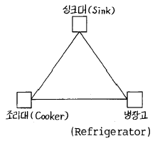
- 삼각형 세변 길이의 합이 짧을수록 효과적인 배치이다.
- 삼각형 세변 길이의 합은 3.6-6.6m 사이에서 구성하는 것이 좋다.
- 싱크대와 조리대 사이의 길이는 1.2-1.8m가 가장적당하다.
- 삼각형의 가장 짧은 변은 조리대와 냉장고 사이의 변이 되어야 한다.
(정답률: 알수없음)

2. 상점입면 구성의 광고요소에 관한 설명중 틀린 것은?
- 주의(attention)
- 전시(display)
- 흥미(interest)
- 기억(memory)
(정답률: 알수없음)
3. 사무소 건물계획에 있어서 주요한 검토 항목 중 그 비중이 가장 적은 것은?
- 임대사무실의 경우는 시장조사에 근거하여 건축계획을 세운다.
- 사무실 건축물로서 편리한 주변환경인가 우선 검토한다.
- 합리적인 근거에 따라 기본 구조계획을 작성한다.
- 남향이 여러면에서 유리하므로 남향이 되도록 계획한다.
(정답률: 56%)
4. 쇼핑센터를 구성하는 주요 요소가 아닌 것은?
- 핵점포
- 몰(Mall)
- 코트(Court)
- 터미널(Terminal)
(정답률: 75%)
5. 주택 설계시 가장 기본이 되는 계획은?
- 입면계획
- 평면계획
- 배치계획
- 정원계획
(정답률: 68%)
6. 식당과 부엌을 겸용하는 다이닝 키친의 가장 큰 이점은?
- 주부의 동선이 단축된다.
- 공사비가 절약된다.
- 증축시 편리하다.
- 평면계획이 자유롭다.
(정답률: 90%)
7. 독신자 아파트의 특징으로서 거리가 먼 것은?
- 단위플랜 자신의 면적이 극도로 절약되어 공용의 사교적 부분이 충분히 설치되어 있다.
- 단위플랜에 부엌을 설치한다.
- 욕실은 공동으로 사용하는 것이 많다.
- 단위플랜에 있어서는 거실 및 침실에 반침을 둔다.
(정답률: 알수없음)
8. 아파트의 블럭플랜 결정조건으로 옳지 않은 것은?
- 각 단위평면이 2면이상 외기에 접할 것
- 현관이 계단으로부터 15m 이내로 멀지 않을 것(홀형)
- 설비공간의 배치는 어떠한 규칙성을 가질 것
- 중요한 거실이 모퉁이에 배치되지 않을 것
(정답률: 31%)
9. 사무소 건물의 코어(core)형식에 관한 설명으로 가장 옳지 않은 것은?
- 편심코어는 일반적으로 소규모 사무소 건물에 많이 쓰인다.
- 중심코어는 구조적으로 가장 바람직하다.
- 중심코어는 바닥면적이 큰 경우에 많이 사용한다.
- 양측코어는 방재상 불리하다.
(정답률: 알수없음)
10. 사무소 건축의 개방식 배치에 관한 사항 중 부적당한 것은?
- 전면적을 유용하게 이용할 수 있다.
- 방의 길이나 깊이에 변화를 줄 수 있다.
- 공사비가 다소 싸질 수 있다.
- 독립성이 뛰어나다.
(정답률: 80%)
11. 사무소 건축에서 일반사무실의 책상배치방법 중 배치의 표준이 되며, 1인당 차지하는 바닥면적이 최소가 되는 것은?
- 4조 직렬배치
- 3조 직렬배치
- 2조 직렬배치
- 1조 직렬배치
(정답률: 46%)
12. 상점 건축에서 판매부분에 속하지 않는 것은?
- 상품관리 부분
- 서비스 부분
- 상품전시 부분
- 통로 부분
(정답률: 85%)
13. 도시 초등학교의 부지로서 부적당한 곳은?
- 일조 배수가 좋은 곳
- 통학권의 중심에 가까운 곳
- 상업지역의 중심에 가까운 곳
- 유해가스나 매연 등을 내는 공장이 부근에 없는 곳
(정답률: 84%)
14. 공장건축의 채광, 조명을 위한 체크 포인트로서 다소 거리가 먼 것은?
- 적정조도
- 조도분포도
- 굴절유무
- 현휘유무
(정답률: 20%)
15. 상점계획에서 부지의 선정 조건에 관한 기술 중 가장 부적당한 것은?
- 사람의 통행이 많고 번화한 곳이 좋다.
- 교통이 편리하고 눈에 잘 뜨이는 곳이 좋다.
- 도로면에 많이 접할수록 좋다.
- 유사한 업종이 주위에 없는 것이 좋다.
(정답률: 55%)
16. 공장의 생산과정에서 운반장치가 아닌 것은?
- 컨베이어
- 크레인
- 윈치
- 클린벤치
(정답률: 알수없음)
17. 백화점 스팬(Span)의 결정요인으로 볼 수 없는 것은?
- 매장 진열장의 배치와 치수
- 엘리베이터, 에스컬레이터의 유무와 배치
- 지하주차장의 주차방식과 주차폭
- 공조실의 폭과 위치
(정답률: 62%)
18. 다음의 학교운영방식 중 아래의 설명에 가장 적합한 방식은?
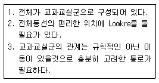
- U형
- UV형
- V형
- E형
(정답률: 알수없음)
19. 학교건축에 있어서 강당 및 실내체육관 계획시 틀린 점은?
- 실내체육관과 강당을 겸용할 경우 강당 전용으로 계획한다.
- 커뮤니티 시설로 자주 이용될 수 있도록 고려한다.
- 외관 계획시 강당은 폐쇄적이고, 실내체육관은 개방적인 성격을 띤다.
- 강당 및 실내체육관 계획시 음향설비에 대한 고려가 매우 중요하다.
(정답률: 84%)
20. 주택의 평면형에 따른 특징을 기술한 것 중 틀린 것은?
- 편복도형은 각 실의 자연조건은 균등하게 되나 건물의 길이가 길게 된다.
- 분리형은 다른 형에 비해 실내부에 고도의 설비와 짜임새가 있어야 된다.
- 중복도형에서는 일반적으로 북측에 화장실이나 계단, 창고 등이 배치된다.
- 중앙홀형은 면적을 집약적으로 계획할 수 있다.
(정답률: 16%)
2과목: 건축시공
21. 벽돌 벽체에 생기는 백화현상을 방지하기 위한 조치로 적당하지 않은 것은?
- 줄눈 모르타르에 석회를 혼합하여 우수의 침입을 방지한다.
- 차양 등의 돌출물에 빗물막이를 잘한다.
- 잘 소성된 벽돌을 사용한다.
- 줄눈을 충분히 사춤하고 줄눈 모르타르에 방수제를 넣는다.
(정답률: 55%)
22. 연질점토지반에서 흙의 점착력을 판별하는 토질시험은?
- 표준관입시험(Penetration test)
- 딘월 샘플링(Thin wall sampling)
- 웰 포인트 시험(Well point test)
- 베인 테스트(Vane test)
(정답률: 54%)
23. 타일 붙임이 끝난후 치장 줄눈을 하기 위해 몇 시간이 경과한 때 줄눈파기를 하는 것이 가장 좋은가?
- 1시간
- 3시간
- 24시간
- 48시간
(정답률: 알수없음)
24. 지명경쟁입찰에서 감안하지 않는 사항은?
- 도급회사의 자본금
- 과거실적
- 보유기자재
- 노무자의 동원능력
(정답률: 알수없음)
25. 일반적으로 레디믹스트 콘크리트의 강도시험 1회의 검사 로트 크기로 적당한 것은 어느 것인가?
- 50m3
- 100m3
- 150m3
- 200m3
(정답률: 40%)
26. 합성수지 창호틀재의 치수에 대한 허용차로서 옳은 것은?
- 나비 : ± 1.0mm, 두께 : 1.0mm 이상
- 나비 : ± 1.0mm, 두께 : 1.5mm 이상
- 나비 : ± 0.8mm, 두께 : 1.0mm 이상
- 나비 : ± 0.8mm, 두께 : 1.5mm 이상
(정답률: 9%)
27. 유리섬유(glass fiber)의 최고 안전 사용온도는?
- 200℃
- 300℃
- 400℃
- 500℃
(정답률: 40%)
28. 은장이음은 주로 어디에 쓰이는가?
- 기둥과 도리에 쓰인다.
- 수장재 및 계단난간 이음에 쓰인다.
- 구조의 인장용이다.
- 반자틀, 반자살대 등에 쓰인다.
(정답률: 30%)
29. 목재의 비중에 있어서 공극율을 산출하는 공식으로 맞는 것은? (단, r:절대건조비중)
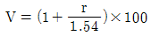
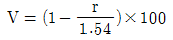
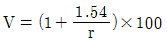
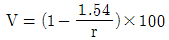
(정답률: 16%)
30. 철근 콘크리트 기둥 주근의 이음 위치로 맞는 것은 어느 것인가?
- 층 높이의 1/3 하부
- 층 높이의 1/4 하부
- 층 높이의 2/3 하부
- 층 높이의 3/4 하부
(정답률: 37%)
31. 다음과 같은 보에서 B의 최소나비로 옳은 것은?
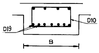
- 32.15㎝
- 32.75㎝
- 33.65㎝
- 38.4㎝
(정답률: 25%)
32. 토질시험과 관계가 없는 시험 항목은 어느 것인가?
- 조립율
- 입도시험
- 투수시험
- 소성한계시험
(정답률: 50%)
33. 다음 그림과 같은 독립기초의 흙파기 토량으로서 맞는 것은?
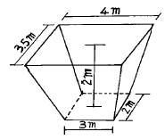
- 18.5m3
- 19.5m3
- 20.5m3
- 21.5m3
(정답률: 19%)
34. 건축 공사시 콘크리트 다짐을 위해 가장 널리 사용되는 진동기의 종류는?
- 봉상 진동기
- 거푸집 진동기
- 표면 진동기
- 엔진 진동기
(정답률: 알수없음)
35. 무근콘크리트의 동결을 방지하기 위하여 사용할 있는 것으로 가장 적당한 것은?
- 제 2산화철
- 산화크롬
- 이산화망간
- 염화칼슘
(정답률: 73%)
36. 테라죠 현장갈기 시공에 있어 줄눈대를 넣는 목적으로 옳지 않은 것은?
- 바름의 구획목적
- 균열방지 목적
- 보수용이 목적
- 마모감소 목적
(정답률: 55%)
37. 사질지반의 토질조사를 할 때 비교적 신뢰성이 있는 방법은?
- 표준관입시험(penetration test)
- 베인시험(vane test)
- 딘월샘플링(thin wall sampling)
- 전기탐사법
(정답률: 50%)
38. 도면과 같은 외벽의 건물에 15m 높이로 쌍줄비계를 설치 할 때 비계면적으로 옳은 것은?
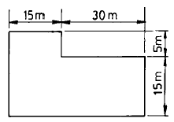
- 1950 m2
- 2004 m2
- 2⑤8 m2
- 2070 m2
(정답률: 50%)
39. 콘크리트 배합시의 시공연도와 관계가 없는 것은?
- 골재의 입도
- 혼화제
- 혼합방법
- 시멘트강도
(정답률: 알수없음)
40. 시방서에 기재하는 사항 중 부적당한 것은?
- 공법에 관한 사항
- 공정에 관한 사항
- 재료에 관한 사항
- 공사비에 관한 사항
(정답률: 50%)
3과목: 건축구조
41. 4변고정 슬랩에서 하중분담에 대한 사항 중 맞는 것은?
- 장변방향이 적고 단변방향이 많이 받게 된다.
- 단변방향이 적고 장변방향이 많이 받게 된다.
- 양방향의 분담비는 같다.
- 분담비는 철근량에 비례한다.
(정답률: 34%)
42. 철골 구조에서 가새를 조일때 사용하는 보강재는?
- 가셋트 플레이트(Gusset Plate)
- 턴 버클(Turn Buckle)
- 슬리이브 너트(Sleve Nut)
- 아이 바아(Eye Bar)
(정답률: 28%)
43. 지반조사에서 건물배치, 지반지지층, 기초구조 등의 형식을 대강 결정할 수있는 자료가 될수 있는 지반조사는?
- 사전조사
- 예비조사
- 추가조사
- 본조사
(정답률: 알수없음)
44. 단면1차모우먼트가 Sz = 12,000㎝3인 구형단면의 높이가 40㎝일때 폭은?
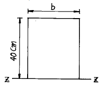
- 10㎝
- 15㎝
- 20㎝
- 30㎝
(정답률: 36%)
45. 보깊이(춤)가 커서 모멘트 및 전단력에 강한 조립보는?
- 판보(Plate Girder)
- 격자보
- 래티스 보
- 복합 형강보
(정답률: 17%)
46. 강도설계법에 의할 경우 균형철근비가 0.002일 때 단철근 직사각형 보에서의 최대 허용철근비는?
- 0.0008
- 0.0015
- 0.016
- 0.0387
(정답률: 43%)
47. 2방향 슬랩의 변장비 λ 의 최대값은?
- λ ㆍ 1.5
- λ ㆍ 2.0
- λ ㆍ 3.0
- λ ㆍ 5.0
(정답률: 알수없음)
48. 고정하중에 의하여 5tㆍm,활하중에 의하여 10tㆍm를 받는 단철근 직사각형보에서 설계 모멘트(Mu)는?
- 18.3 tㆍm
- 20.3 tㆍm
- 24.0 tㆍm
- 28.3 tㆍm
(정답률: 알수없음)
49. 그림에서 Y축에 대한 단면2차모우먼트는?
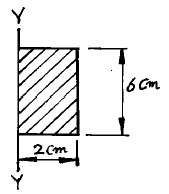
- 6㎝4
- 12㎝4
- 16㎝4
- 24㎝4
(정답률: 알수없음)
50. 강도설계법에 의한 철근콘크리트의 보설계에서 사용철근의 설계기준 항복강도가 fy=4,000 kg/cm2 일때 최소 철근비는?
- 0.0025
- 0.0030
- 0.0035
- 0.004
(정답률: 46%)
51. 철근 콘크리트 구조에서 부착력이 부족할때 단면의 크기를 변경하지 않고 부착력을 증가시키는 가장 적당한 방법은?
- 철근량을 늘린다.
- 철근량은 같고 지름이 작은 철근을 여러개 사용한다.
- 콘크리트(Concrete)의 강도를 높인다.
- 고강도 철근을 사용한다.
(정답률: 25%)
52. 그림과 같은 캔틸레버 구조에서 고정단 A점의 최대 휨모우먼트는?
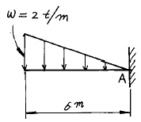
- 12tㆍm
- 16tㆍm
- 20tㆍm
- 24tㆍm
(정답률: 20%)
53. 그림과 같은 라아멘에서 휨모우먼트가 영으로 되는 부분은 몇개인가?
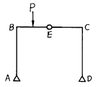
- 1
- 2
- 3
- 4
(정답률: 18%)
54. 그림에서 반력 Rc가 0 이 되려면 B점의 집중하중 P는 몇 t인가?
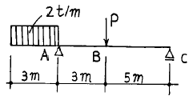
- 3t
- 6t
- 9t
- 12t
(정답률: 10%)
55. 철근콘크리트 독립기초의 주각을 고정상태에 가깝게 하는 방법으로 가장 옳은 것은?
- 기초판을 두껍게 한다.
- 기초를 깊게 한다.
- 기초판의 배근을 충분히 한다.
- 지중보의 강성을 높인다.
(정답률: 42%)
56. 보통콘크리트를 사용한 양단 연속 1방향 슬랩의 스팬이 4.2m 일때 처짐을 계산하지 않는경우 강도설계법에서 최소 두께로 옳은 것은?
- 12cm
- 13cm
- 14cm
- 15cm
(정답률: 알수없음)
57. 벽돌조에서 내력벽의 두께는 벽높이의 얼마 이상으로 하는가?
- 1/10
- 1/12
- 1/16
- 1/20
(정답률: 55%)
58. 보강 콘크리트블록조의 기술로서 옳지 않은 것은?
- 세로철근은 철근지름의 40배 이상을 기초나 테두리보에 정착시켜야 한다.
- 내력벽은 통줄눈으로 쌓지 못한다.
- 내력벽의 두께는 15㎝ 이상으로 한다.
- 철근은 굵은 것보다 가는 것을 많이 사용하는 것이 좋다.
(정답률: 34%)
59. 그림의 보에서 복근비는?
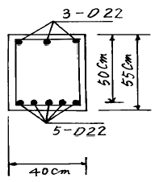
- 30%
- 40%
- 50%
- 60%
(정답률: 알수없음)
60. 휨모우먼트 0.5tm를 받는 장방형 목조보(b x h = 10 x 20㎝)의 휨응력도(㎏/cm2)는?
- 56
- 67
- 75
- 82
(정답률: 29%)
4과목: 건축설비
61. 다음중 벨로즈형 신축이음의 도시기호로 맞는것은?
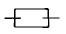
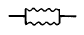
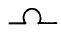
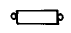
(정답률: 50%)
62. 건물의 실내환경에서 실감온도(유효온도)의 요소는?
- 온도, 습도
- 온도, 습도, 복사
- 온도, 습도, 기류
- 온도, 기류, 복사
(정답률: 22%)
63. 피뢰침(避雷針)에 대한 접지공사(接地工事)는?
- 1종 접지공사
- 2종 접지공사
- 3종 접지공사
- 특별 3종 접지공사
(정답률: 37%)
64. 화기를 취급하지 않는 사무실 등의 장소에 적합한 감지기는?
- 정온식 스포트형
- 보상식 스포트형
- 차동식 스포트형
- 차동식 분포형
(정답률: 알수없음)
65. 일반 건축물의 변전실 층높이는 고압의 경우 건물의 보밑에서 얼마 이상이 요구되는가?
- 2m 이상
- 3m 이상
- 4m 이상
- 5m 이상
(정답률: 36%)
66. 전선관내에 전선을 4가닥이상 삽입할 경우 전선단면적은 전선관구멍 단면적의 몇% 이하가 되게 하는가?
- 10%
- 20%
- 30%
- 40%
(정답률: 29%)
67. 화재시 인접 건물로 연소되는 것을 방지하는 설비는?
- 스프링 클러(sprinkler)
- 드렌쳐(drencher)
- 송수구(Siamese connection)
- 물분무 소화설비
(정답률: 알수없음)
68. 복사난방의 바닥 배관시 바닥 표면에서 파이프 윗면까지의 매설깊이는 관경의 얼마이상으로 하는가?
- 0.5 - 1배
- 1.5 - 2배
- 2.5 - 3배
- 3 - 3.5배
(정답률: 47%)
69. 피뢰침의 주요구조부가 아닌것은?
- 돌침부
- 피뢰도선
- 접지전극
- 리미트 스윗치
(정답률: 알수없음)
70. 증기보일러 주변 배관방식에서 하트포드 접속방식을 채택하는 이유는?
- 보일러내의 수위를 안전하게 확보하기 위하여
- 보일러의 열효율을 향상시키기 위하여
- 보일러내의 스케일 발생을 줄이기 위하여
- 소음을 줄이기 위하여
(정답률: 37%)
71. 증기난방에서 대규모 건물 또는 공장 등에서는 고압을 쓴다. 다음 중 고압의 기준은?
- 0.1㎏/cm2 이상
- 0.5㎏/cm2 이상
- 1.0㎏/cm2 이상
- 10㎏/cm2 이상
(정답률: 43%)
72. 옥내 배선의 간선 결정시 고려할 사항과 관련없는 것은?
- 전압강하
- 배선방법
- 허용전류
- 기계적 강도
(정답률: 알수없음)
73. 펌프의 용량을 결정하는데 관계없는 것은?
- 양정
- 효율
- 양수량
- 구경
(정답률: 36%)
74. 간접배수와 관련이 없는 것은?
- 응축기에서의 배수
- 급수용 탱크에서의 배수
- 세탁기에서의 배수
- 세면기에서의 배수
(정답률: 37%)
75. 관직경이 서로다른 배관 접속 용으로 사용되는 이음 부속품은?
- 새들(saddle)
- 록크 너트(lock nut)
- 커플링(coupling)
- 부싱(bushing)
(정답률: 22%)
76. 자가발전 설비 용량은 보통 수전설비 용량에 대하여 몇 % 정도를 확보하는가?
- 20-30%
- 30-40%
- 40-50%
- 50-60%
(정답률: 19%)
77. 대변기의 세정 급수 장치에서 로우탱크식의 급수관 크기로 가장 적당한 것은?
- 15㎜
- 25㎜
- 32㎜
- 50㎜
(정답률: 9%)
78. 간접가열식 급탕설비의 저탕조 부속기기와 관계가 먼 것은?
- 써머스텟(thermostat)
- 온도계(thermometer)
- 안전밸브(safety valve)
- 리턴 콕(return cock)
(정답률: 28%)
79. 건축물의 한층에 설치되는 옥내소화전 수가 7개인 건축물에 옥내소화전 전용 수원의 용량으로 적당한 것은?(2021년 04월 01일 개정된 규정 적용됨)
- 1.3(m3)
- 2.6(m3)
- 5.2(m3)
- 13(m3)
(정답률: 55%)
80. 다음 실내온도 측정시 측정위치로 가장 알맞는 곳은?
- 바닥위 1.5m 외벽의 실내측 표면으로 부터 1m 안쪽
- 바닥위 1.0m 외벽의 실내측 표면으로 부터 0.8m 안쪽
- 바닥위 0.5m 외벽의 실내측 표면으로 부터 0.5m 안쪽
- 바닥표면, 벽표면
(정답률: 73%)
5과목: 건축관계법규
81. 건축법상 용도분류와의 관계가 맞지 않는 것은?
- 지역의료보험조합 - 제2종 근린생활시설
- 경마장 - 문화 및 집회시설
- 장례식장 - 의료시설
- 유스호스텔 - 교육연구 및 복지시설
(정답률: 알수없음)
82. 노외 주차장의 출구와 입구를 설치할 수 있는 장소는?
- 도로교통법에 의하여 정차, 주차가 금지되는 도로의 부분
- 횡단보도에서 5m이내의 도로의 부분
- 너비 4m인 도로와 종단구배 10%인 도로
- 장애인복지시설의 출입구로부터 20m이내의 도로의 부분
(정답률: 42%)
83. 건축허가를 받아 건축한 주택이 재해로 인하여 멸실되었을 경우 멸실 후 몇 일 이내에 신고해야 하는가?
- 7일
- 10일
- 15일
- 30일
(정답률: 7%)
84. 건축물을 특별시 또는 광역시에 건축하고자 하는 경우에 반드시 특별시장 또는 광역시장의 허가를 받아야 하는 건축물의 기준으로 옳은 것은?
- 층수가 16층 이상이거나 연면적의 합계가 50,000m2 이상인 건축물
- 층수가 16층 이상이거나 연면적의 합계가 100,000m2 이상인 건축물
- 층수가 21층 이상이거나 연면적의 합계가 50,000m2 이상인 건축물
- 층수가 21층 이상이거나 연면적의 합계가 100,000m2 이상인 건축물
(정답률: 37%)
85. 건축법상 층의 구분이 명확하지 아니한 건축물의 층수를 산정함에 건축물의 높이 몇미터마다 하나의 층으로 산정하는가?
- 2.4미터
- 3.0미터
- 4.0미터
- 4.5미터
(정답률: 50%)
86. 노외 주차장인 주차전용 건축물을 건축할 때 특별시, 광역시, 시 또는 군의 조례로서 건축규제를 완화할 수 있는 기준으로 틀린 것은?
- 건폐율 : 90/100 이하
- 용적률 : 1500% 이하
- 대지면적의 최소한도 : 50m2 이상
- 높이제한 : 대지가 너비 12m 미만의 도로에 접하는 경우 건축물의 각 부분의 높이는 그 부분으로부터 대지에 접한 도로의 반대쪽 경계선까지의 수평거리의 3배 이하
(정답률: 10%)
87. 피뢰설비 설치기준으로 잘못된 것은?
- 인하도선 사이의 간격은 40m 이하로 한다.
- 피뢰도체 및 피뢰도선은 가연성 물질과는 20cm 이상 거리를 둔다.
- 돌침은 지름 12mm 이상인 알루미늄, 철을 사용한다.
- 일반건축물의 경우 돌침 또는 피뢰도체는 보호각의 기준을 60도로 설치한다.
(정답률: 10%)
88. 피난층이 있는 비상용승강기의 승강장 출입구로부터 도로 또는 공지까지의 최대거리는?
- 30m
- 40m
- 50m
- 60m
(정답률: 54%)
89. 부설주차장 설치 대상 시설물 종류 및 설치기준이 잘못된 것은?
- 제2종 근린생활시설 - 시설면적 200m2당 1대
- 위락시설 - 시설면적 150m2당 1대
- 판매 및 영업시설 - 시설면적 150m2당 1대
- 아파트 - 시설면적 120m2당 1대
(정답률: 46%)
90. 각 층의 바닥면적이 6,000m2인 6층의 문화 및 집회시설 중 전시장을 건축하는 경우에 5층 이상의 층에서만 전용으로 사용하게 하는 피난계단 또는 특별피난계단은 최소 몇 개소가 필요 하는가?
- 1개소
- 2개소
- 3개소
- 4개소
(정답률: 58%)
91. 자주식주차장으로써 건축물식에 의한 노외주차장의 조명은 바닥으로부터 높이 85cm 높이에서 몇 룩스 이상이어야 하는가?
- 60 룩스
- 70 룩스
- 80 룩스
- 85 룩스
(정답률: 40%)
92. 건축물의 열손실방지를 위한 중부지역의 단열기준 중 틀린 것은?
- 외기에 직접 면하는 일반건축물 거실의 외벽은 0.4 ㎉/m2h℃ 이하
- 외기에 직접 면하는 일반건축물의 최상층 거실의 반자는 0.3㎉/m2h℃ 이하
- 공동주택의 측벽은 0.3㎉/m2h℃ 이하
- 공동주택의 층간바닥이 바닥난방인 경우는 0.7㎉/m2h℃ 이하
(정답률: 30%)
93. 거실의 채광 기준 적용 대상에 해당되지 않는 곳은?
- 종교시설의 집회장
- 숙박시설의 객실
- 의료시설의 병실
- 기숙사의 침실
(정답률: 36%)
94. 방화구조의 기준을 나타낸 것으로 옳지 않은 것은?
- 철망모르타르로서 그 바름두께가 1.2㎝ 이상인 것
- 석면시멘트판 또는 석고판 위에 시멘트모르타르 또는 회반죽을 바른 것으로서 그 두께의 합계가 2.5㎝ 이상인 것
- 시멘트모르타르 위에 타일을 붙인 것으로서 그 두께의 합계가 2.5㎝ 이상인 것
- 두께 1.2㎝ 이상의 석고판 위에 석면시멘트판을 붙인것
(정답률: 20%)
95. 부설주차장의 인근설치에 관한 설명중 잘못된 것은?
- 원칙적으로 시설물의 부지인근에 단독으로 설치할수 있는 주차대수는 300대 이하이다.
- 원칙적으로 시설물의 부지인근에 공동으로 설치할수 있는 주차대수는 600대 이하이다.
- 시설물이 있는 부지경계선에서 부설주차장까지의 직선거리는 300미터 이내이다.
- 시설물이 있는 부지경계선에서 부설주차장까지의 도보거리는 600미터 이내이다.
(정답률: 59%)
96. 연면적의 합계가 5,000m2 이상인 건축물의 대지에 공개공지 또는 공개공간을 확보해야 하는 시설이 아닌 것은?
- 판매 및 영업시설
- 문화 및 집회시설
- 의료시설
- 업무시설
(정답률: 36%)
97. 기계식주차장의 사용검사와 정기검사의 유효기간으로 바른 것은?
- 사용검사와 정기검사 모두 2년
- 사용검사는 3년, 정기검사는 2년
- 사용검사는 2년, 정기검사는 3년
- 사용검사와 정기검사 모두 3년
(정답률: 27%)
98. 일조 등의 확보를 위한 건축물의 높이 제한에 있어서 관련이 없는 것은?
- 정북방향 및 인접대지경계선
- 연속일조시간
- 용도지역
- 건축물의 건축면적
(정답률: 58%)
99. 대지안의 조경대상 중 제외되는 규정이 아닌 것은?
- 축사
- 준농림지역 안의 건축물
- 읍· 면의 생산녹지지역에 건축하는 건축물
- 산업단지 안의 공장
(정답률: 10%)
100. 방화지구 안에서 주요구조부가 불연재료로 된 건축물로서 주요구조부 및 외벽을 내화구조로 하지 아니할 수 있는 건축물은?
- 단독주택
- 도매시장
- 금융업소
- 청소년수련관
(정답률: 19%)